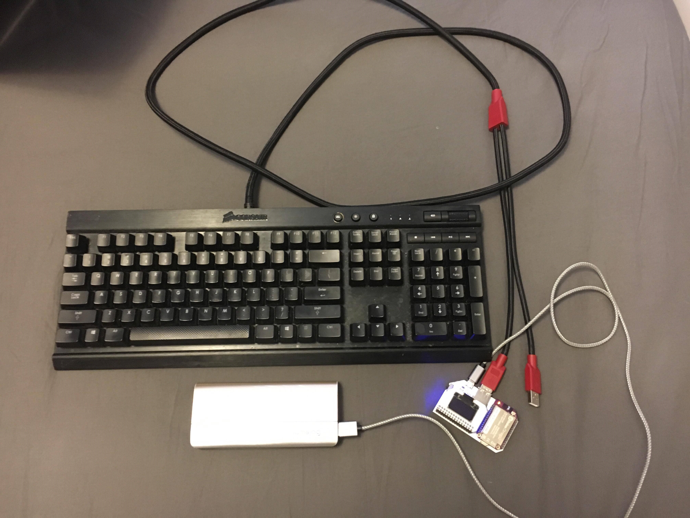
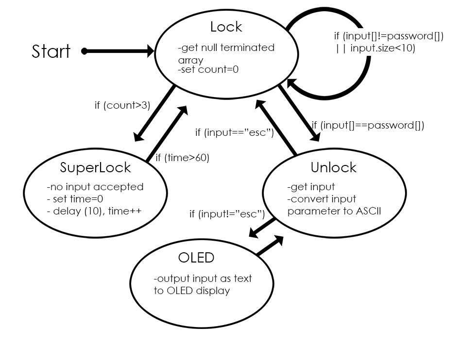
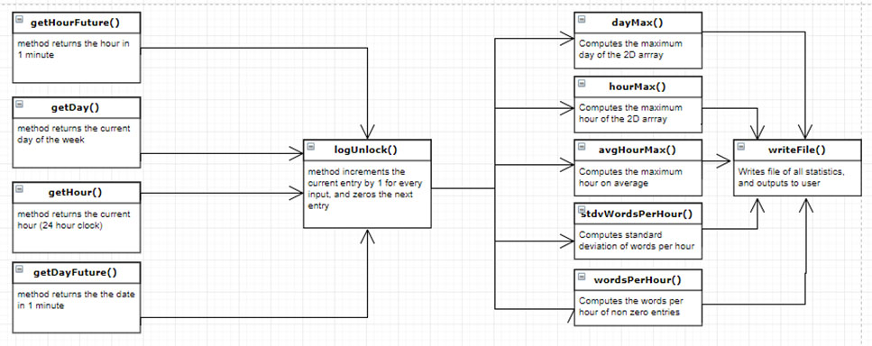

This is a project I worked on in a team of three from November to December 2017. A keyboard was connected to an Onion Omega, which was used to lock and unlock the keyboard's functionality. When in the locked state, the Omega would block off the keyboard's input signals. When unlocked, the keyboard could be used to type text onto an OLED display connected to the Omega. In addition, log files which contained timestamps of when the system was used as well as statistics computed on usage patterns was output to the Omega's internal storage on a weekly basis.
The lock system for the Omega is based off the following statemachine:
During the unlocked state, the Omega constantly searches for input from the keyboard. When a key is pressed, the Omega converts the raw input signal to an ASCII character, which is then checked against the password array. If a set of inputs is equal to the password array, the system is unlocked. If an incorrect password is entered more than three times, then the device locks for 60 seconds, during which the user is unable to try unlocking the device.
The OLED display was programmed in C++ using the Onion I2C and OLED Expansion libraries. The libraries didn't support the use of the OLED as a typing display, so text-editing features such as backspace, line break, and capitalization had to be manually implemented through the use of loops. Pressing the 'esc' key would exit the text-display and lock the system.
Log files consisting of user activiting logs and usage statistics were output to the Omega's internal storage on a weekly basis. Statistics such as words per hour and standard standard deviation were calculated using various functions and arrays.
As shown by the above diagram, each time the Omega detects input from the keyboard, functions to get the current time are called, and the the statistics and logs are updated for the current input and time.